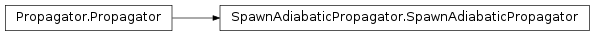
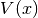
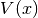
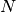
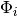
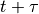
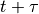
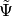

SpawnAdiabaticPropagator¶
About the SpawnAdiabaticPropagator class¶
The WaveBlocks Project
@author: R. Bourquin @copyright: Copyright (C) 2010, 2011, 2012 R. Bourquin @license: Modified BSD License
Inheritance diagram¶

Class documentation¶
- class WaveBlocks.SpawnAdiabaticPropagator(propagator, potential, packet, leading_component, parameters)¶
This class can numerically propagate given initial values
 in
a potential . The propagation is done for several given homogeneous
Hagedorn wavepackets neglecting interaction.
in
a potential . The propagation is done for several given homogeneous
Hagedorn wavepackets neglecting interaction.- get_number_components()¶
Returns: The number  of components  of .
- get_number_packets()¶
Get the number of packets
 taking part in the simulation.
taking part in the simulation.Returns: The number of packets currently taking part in the simulation.
- get_potential()¶
Returns: The MatrixPotential instance used for time propagation.
- get_wavepackets(packet=None)¶
Retrieve the wavepackets taking part in the simulation.
Parameters: packet (Integer) – The number of a single packet that is to be returned. Returns: A list of HagedornWavepacket instances that represents the current wavepackets.
- number_components = None¶
Number of components the wavepacket
 has got.
has got.
- oracle = None¶
The condition which determines when to spawn.
- packets = None¶
The Hagedorn wavepackets.
- potential = None¶
The potential
 the packet feels.
the packet feels.
- propagate(time)¶
Given the wavepacket
at time  compute the propagated
wavepacket at time . We perform exactly one timestep
compute the propagated
wavepacket at time . We perform exactly one timestep  here. At every timestep we check the spawning condition.
here. At every timestep we check the spawning condition.
- should_spwan()¶
Check if there is a reason to spawn a new wavepacket.
- spawn(info)¶
Really spawn the new wavepackets . This method appends the new HagedornWavepacket instances to the list packets of packets.